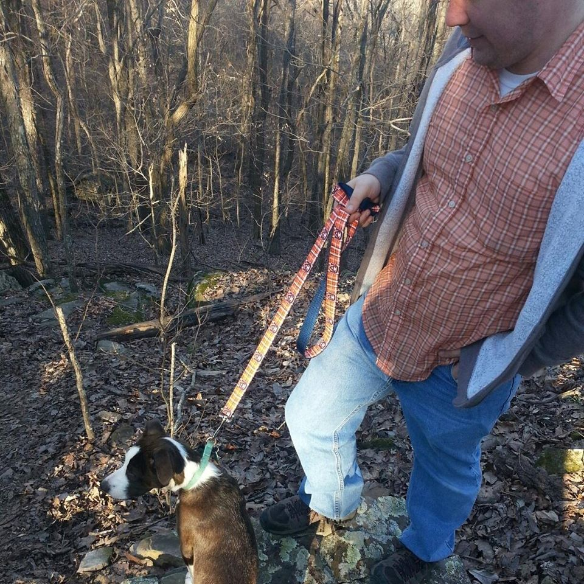

Who am I?
 My name is Phillip Clontz and I am a ASP.NET MVC software engineer working for SAIC in Huntsville, Alabama. Prior to being a software enginer I was a math teacher at New Hope High School where I taught a range of courses including Geometry, Algebra 2, Pre-Calculus, and AP Calculus.In addition to core classes, I taught programming as an elective course. In that class I used Khan Academy's programming course to structure the class. This course teaches students how to program using processingJS to interact with the HTML5 Canvas.
Outside of classes I also coached the New Hope Scholars Bowl Team. Outside of work I spend my time raising my wonderful son Benjamin with my wife Christina. In addition, I still work on pet projects that I will add pages for.
My Story
I was born and raised in Huntsville, Alabama. I attended high school at Madison County's Buckhorn High School where I gained my first real experience with programming in an intro to C++ class. During my high school years, I played around with several different languages C++, Java, and BASIC. I also worked on making several games using GameMaker and RPGMaker.After graduating from high school, I attended the University of Alabama in Huntsville where I majored in Mathematics. While at UAH I also took the education curriculum to become a secondary teacher. During this time I grew my knowledge of programming by taking a couple of programming classes. After college I taught Calculus for three years before switching professions to focus on programming.